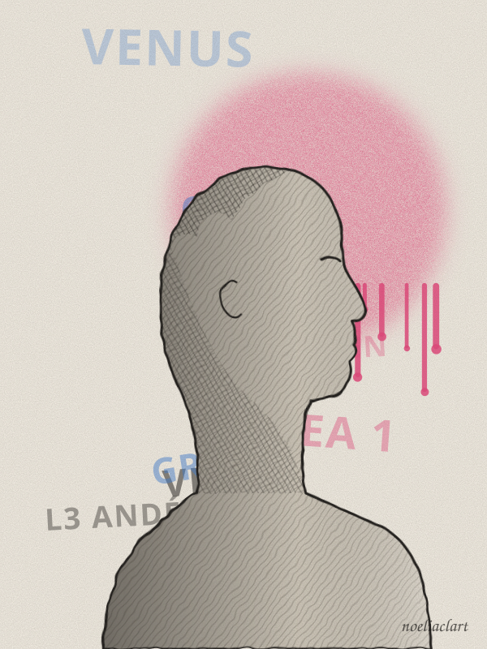
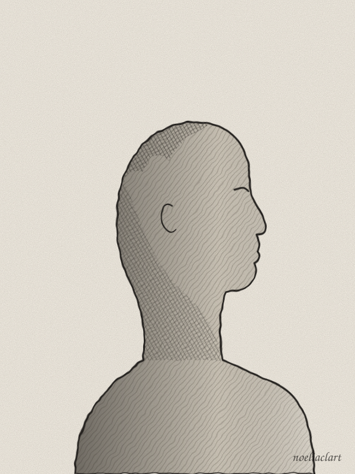

Jaén · Granada
Lo clásico,
a pie de calle.
Soy Noelia Calahorro. Dibujo realismo con carboncillo, grafito y lápices de colores, y llevo a los personajes clásicos a un mundo de spray, auriculares y paredes con historia.

Galería
Obra
Pulsa en cualquier pieza para ver su historia.

Sobre mí
Noelia Calahorro
Nací entre los olivos de Jaén y crecí dibujando en las cuestas de Granada. De una me llevé la paciencia; de la otra, las paredes llenas de color.
Mi trabajo es realista y de oficio: horas de capas de grafito, sombras de carboncillo y lápices de colores que se mezclan a mano. Pero me gusta romper la solemnidad: una Venus esperando el metro, un Apolo con auriculares, una Atenea en turno de noche. Lo clásico y lo urbano hablando el mismo idioma.
- Carboncillo para la fuerza y el contraste
- Grafito para el detalle y la piel
- Lápices de colores para el toque urbano
Agenda
Eventos
Exposiciones, talleres y dibujo en directo. Ven a verme dibujar.
Próximos
Pasados
Pedidos personalizados
Tu retrato, a mano y en papel
Personas, parejas, familias o mascotas. Cada encargo es una pieza única, firmada.
-
01
Escríbeme
Mándame un mensaje por Instagram contándome qué tienes en mente.
-
02
Foto y formato
Elegimos la foto de referencia, el tamaño y la técnica: grafito, carboncillo o color.
-
03
Lo dibujo
Te enseño avances del proceso para que veas cómo va tomando vida.
-
04
Llega a tu casa
Bien protegido, con firma y listo para enmarcar. Entrega en mano en Jaén y Granada.
A4
Retrato individual. Ideal para regalo.
A3
Hasta dos personas o mascotas. El más pedido.
A mayor tamaño
Familias, composiciones y piezas con fondo urbano.
Pídeme presupuesto sin compromiso: el precio depende del tamaño, la técnica y el número de figuras.
Contacto
¿Hablamos?
La forma más rápida de contactarme es por mensaje directo en Instagram.
@noeliaclart